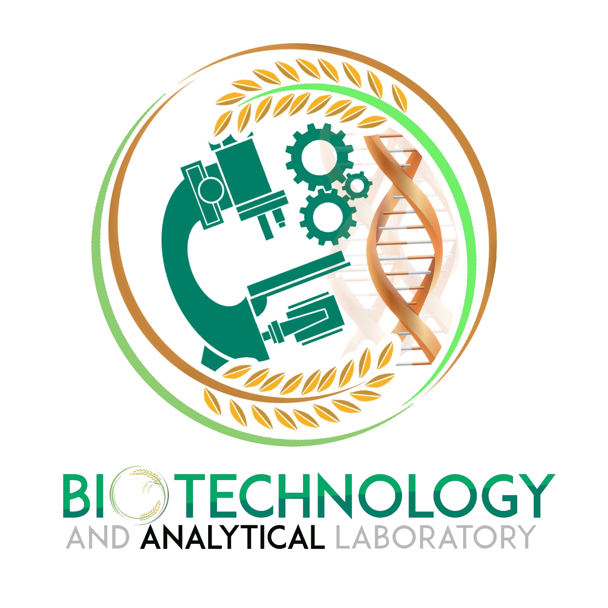

Search for a Bacteria And Fungi

Effective disease management is crucial for maintaining the health and productivity of human and cacao crops.
Both are suspectible to various fungal, bacteria, and viral infection that can be significantly reduce yeild and quality.
Mission Vision
The CLSU Regional Center for Molecular Biology and Biotechnology Resources is
committed to advancing the fields of molecular biology and biotechnology through
cutting-edge research, education, and technological innovation. We strive to provide
state-of-the-art facilities and expert guidance to students, researchers, and
professionals, empowering them to address regional and global challenges in
agriculture, health, and environmental sustainability. By fostering collaboration and
knowledge exchange, we aim to develop practical biotechnological solutions that drive
progress in agriculture, industry, and society.
To be a premier institution in biotechnology and molecular biology, renowned for its
excellence in research, education, and innovation. Our vision is to lead the way in
developing sustainable biotechnological solutions that promote food security, improve
health, and enhance environmental sustainability. We aim to inspire the next
generation of scientists, innovators, and leaders in biotechnology, transforming
challenges into opportunities for a better, more sustainable future.